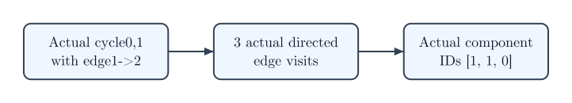
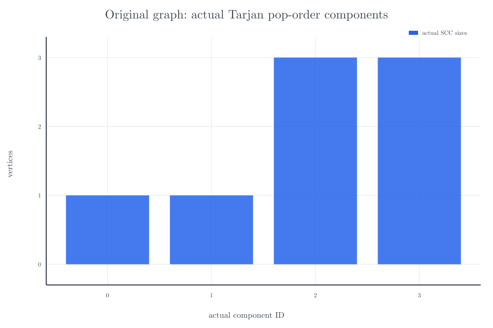
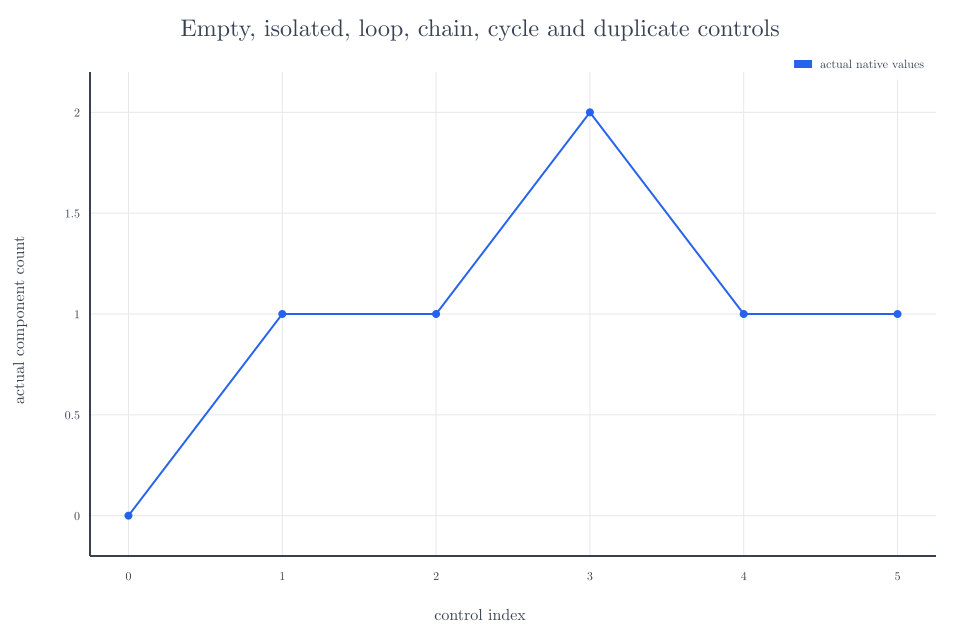
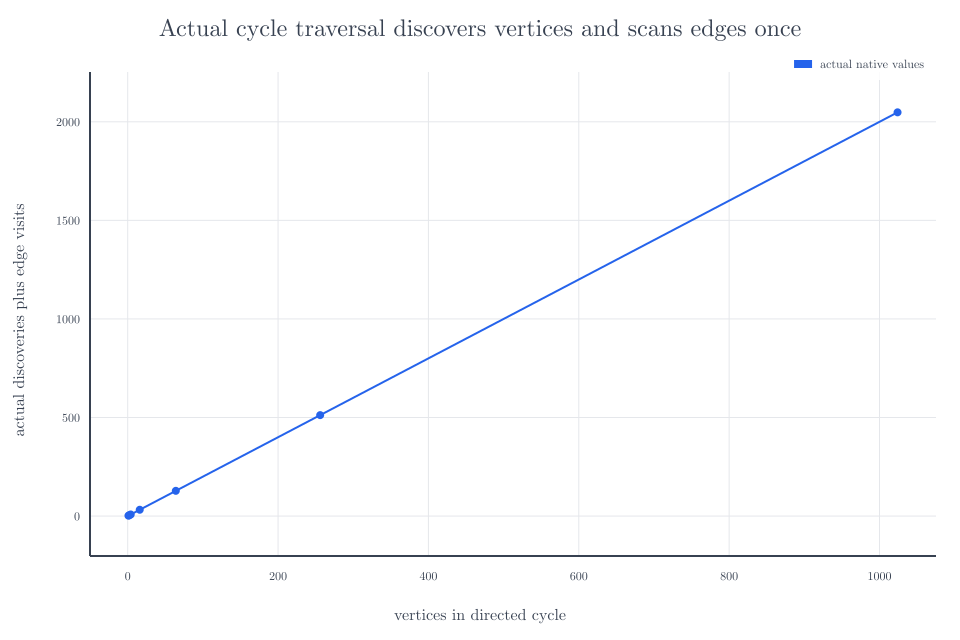

Tarjan SCC: actual discovery, low links and component pops
Abstract
Tarjan finds a directed graph partition in one depth-first traversal. The actual explicit-stack producer records discovery, active-neighbor low-link updates, child propagation and component pops while retaining legacy traversal IDs.
Mechanism and mathematical scope
A vertex starts with discovery=low=the next counter and enters the active SCC stack. For an already discovered active neighbor use its discovery number; after a DFS child finishes propagate its low link. When low(u)=discovery(u), pop active vertices through u as one component. Explicit call frames replace recursion. Each adjacency entry is processed once, so work is O(V+E), including loops and duplicates. Component IDs follow pop order and are not canonical labels; independently compare mutual component membership, not arbitrary ID equality.
A tiny actual producing history
The table and native concept diagram read the same producing execution. Every block below is a complete editable C++ program.
#include <dm/dm.hpp>
int main() {
namespace a = dm::algorithms;
namespace g = dm::graphics;
std::filesystem::create_directories("build");
auto r = a::tarjan_scc_trace(3, {{1}, {0, 2}, {}});
std::print("| actual action | vertex | other | discovery | low | component | active stack size |\n| --- " "| ---: | ---: | ---: | ---: | ---: | ---: |\n");
for (const auto &s : r.steps)
std::print("| {} | {} | {} | {} | {} | {} | {} |\n", s.action, s.vertex,
s.other, s.discovery, s.low, s.component, s.active);
g::Diagram concept_diagram(48, 1100);
concept_diagram.node("n0", {0, 0}, "Actual cycle0,1 with edge1->2");
concept_diagram.node("n1", {5, 0},
std::format("{} actual directed edge visits",
r.edge_visits));
concept_diagram.node("n2", {10, 0},
std::format("Actual component IDs {}", r.components));
concept_diagram.edge("n0", "n1").edge("n1", "n2");
concept_diagram.save_svg("build/tarjan_scc_tiny.svg");
}| actual action | vertex | other | discovery | low | component | active stack size |
|---|---|---|---|---|---|---|
| discover | 0 | -1 | 0 | 0 | -1 | 1 |
| edge | 0 | 1 | 0 | 0 | -1 | 1 |
| discover | 1 | -1 | 1 | 1 | -1 | 2 |
| edge | 1 | 0 | 1 | 1 | -1 | 2 |
| back-edge | 1 | 0 | 1 | 0 | -1 | 2 |
| edge | 1 | 2 | 1 | 0 | -1 | 2 |
| discover | 2 | -1 | 2 | 2 | -1 | 3 |
| pop | 2 | -1 | 2 | 2 | 0 | 2 |
| finish | 2 | -1 | 2 | 2 | 0 | 2 |
| propagate | 1 | 2 | 1 | 0 | -1 | 2 |
| finish | 1 | -1 | 1 | 0 | -1 | 2 |
| propagate | 0 | 1 | 0 | 0 | -1 | 2 |
| pop | 1 | -1 | 1 | 0 | 1 | 1 |
| pop | 0 | -1 | 0 | 0 | 1 | 0 |
| finish | 0 | -1 | 0 | 0 | 1 | 0 |

The retained original experiment
#include <dm/dm.hpp>
int main() {
namespace a = dm::algorithms;
namespace g = dm::graphics;
std::filesystem::create_directories("build");
const std::vector<std::vector<int>> adj{{1}, {2}, {0, 3}, {4}, {5}, {3, 6},
{7}, {}};
auto r = a::tarjan_scc_run(8, adj);
auto other = a::kosaraju_scc(8, adj);
bool same = true;
for (std::size_t i = 0; i < 8; ++i)
for (std::size_t j = 0; j < 8; ++j)
same &=
(r.components[i] == r.components[j]) == (other[i] == other[j]);
std::print("Original8-vertex graph actual IDs `{}`; Kosaraju partition agrees {}.\n\n| actual component " "| original members |\n| ---: | --- |\n",
r.components, same);
std::vector<double> sizes;
std::vector<std::string> labels;
for (std::size_t c = 0; c < r.component_count; ++c) {
std::vector<int> members;
for (int v = 0; v < 8; ++v)
if (r.components[v] == int(c))
members.push_back(v);
std::print("| {} | `{}` |\n", c, members);
labels.push_back(std::to_string(c));
sizes.push_back(members.size());
}
auto chart =
g::RPlot::barplot(sizes, labels, "actual SCC sizes", {37, 99, 235});
chart.title("Original graph: actual Tarjan pop-order components").x_label(
"actual component ID").y_label("vertices");
chart.save_svg("build/tarjan_scc_original.svg");
}Original8-vertex graph actual IDs [3, 3, 3, 2, 2, 2, 1, 0]; Kosaraju partition agrees true.
| actual component | original members |
|---|---|
| 0 | [7] |
| 1 | [6] |
| 2 | [3, 4, 5] |
| 3 | [0, 1, 2] |

Explicit controls
#include <dm/dm.hpp>
int main() {
namespace a = dm::algorithms;
namespace g = dm::graphics;
std::filesystem::create_directories("build");
std::vector<std::vector<std::vector<int>> > graphs{{}, {{}}, {{0}},
{{1}, {}}, {{1}, {0}},
{{1, 1}, {0}}};
std::vector<double> x, y;
std::print("| control | vertices | actual SCCs | actual edge visits |\n| ---: | ---: | ---: | ---: |\n");
for (std::size_t i = 0; i < graphs.size(); ++i) {
auto r = a::tarjan_scc_run(int(graphs[i].size()), graphs[i]);
x.push_back(i);
y.push_back(r.component_count);
std::print("| {} | {} | {} | {} |\n", i, graphs[i].size(),
r.component_count, r.edge_visits);
}
auto plot = g::RPlot::create();
plot.lines(x, y, "actual native values", {37, 99, 235}).points(
x, y, {37, 99, 235}, 4).title("Empty, isolated, loop, chain, cycle and duplicate controls").x_label("control index").y_label("actual component count");
plot.save_svg("build/tarjan_scc_controls.svg");
}| control | vertices | actual SCCs | actual edge visits |
|---|---|---|---|
| 0 | 0 | 0 | 0 |
| 1 | 1 | 1 | 0 |
| 2 | 1 | 1 | 1 |
| 3 | 2 | 2 | 1 |
| 4 | 2 | 1 | 2 |
| 5 | 2 | 1 | 3 |

Actual selected work and sensitivity
#include <dm/dm.hpp>
int main() {
namespace a = dm::algorithms;
namespace g = dm::graphics;
std::filesystem::create_directories("build");
std::vector<double> x, y;
std::print("| directed cycle vertices | actual discoveries | edge visits | peak explicit frames |\n| " "---: | ---: | ---: | ---: |\n");
for (int n : {1, 2, 4, 16, 64, 256, 1024}) {
std::vector<std::vector<int>> adj(n);
for (int i = 0; i < n; ++i)
adj[i].push_back((i + 1) % n);
auto r = a::tarjan_scc_run(n, adj);
x.push_back(n);
y.push_back(r.edge_visits + r.discoveries);
std::print("| {} | {} | {} | {} |\n", n, r.discoveries, r.edge_visits,
r.peak_frames);
}
auto plot = g::RPlot::create();
plot.lines(x, y, "actual native values", {37, 99, 235}).points(
x, y, {37, 99, 235}, 4).title("Actual cycle traversal discovers vertices and scans edges once").x_label("vertices in directed cycle").y_label("actual discoveries plus edge visits");
plot.save_svg("build/tarjan_scc_work.svg");
}| directed cycle vertices | actual discoveries | edge visits | peak explicit frames |
|---|---|---|---|
| 1 | 1 | 1 | 1 |
| 2 | 2 | 2 | 2 |
| 4 | 4 | 4 | 4 |
| 16 | 16 | 16 | 16 |
| 64 | 64 | 64 | 64 |
| 256 | 256 | 256 | 256 |
| 1024 | 1024 | 1024 | 1024 |

API and interpretation
All row counts and neighbor IDs are checked before traversal; negative counts fail and the empty graph is valid. Self loops and duplicate directed entries are retained and counted. Actual low-link arrays and component IDs come from the producing kernel. Capture does not run a second SCC traversal.
Reusable producers, fixtures and histories live in the canonical C++ library. Captured records own their values and do not come from a separate report replay. Selected counters and record/scalar policies are specified at their API boundaries; they are not peak-byte or wall-time budgets. Synthetic structural inputs are controlled fixtures for these mechanisms.
References
Verified in the shared ten-document batch: 72 scoped native cases;20 directly
instrumented ASan/UBSan cases;82 executable public examples;327/327 definitions
across23 full scopes;10 hovers;3797 independent records/1769203 checks;frozen
valid-input comparisons across all ten families with cyclic-tree validation
correction recorded;12 checkout/installed standalone headers and linked
ten-family consumer;40 executed programs and40 inspected figures with both
exports. Receipts:
/mnt/projects/datamunge/build/mepml-conversion/batch-384-393/.